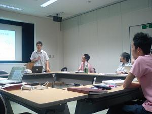

■［教員編］ - 研究系列: 先端生命科学
「がんのメカニズム解明を目指して」
環境情報学部 斎藤輪太郎専任講師
小さい頃から研究者に憧れていた。そして夢は研究者になって医薬品の開発を行
うことだった。特にがんはいまだに決定的な治療法がなく、世界中の人々が苦し
んでいる病気。これを完治させる薬を発明できたら、どんなに素晴らしいことだ
ろうと思っていた。
しかし時は流れ、次第に興味がコンピュータに移り、最
先端の情報科学を学びたくて環境情報学部に入学した。そして数理統計学などを
勉強し、述語論理やニューラルネットワークを用いた知的なシステムの開発を行
った。折しも生命科学が飛躍的な成長期を迎え、高度に発達した実験機器から出
力される膨大な量のデータを扱うためには情報科学が必要不可欠となりつつあっ
た。そこで指導教員の冨田勝助教授（当時）の勧めもあって研究分野も情報科学
を用いた生命科学、すなわちバイオインフォマティクスにシフトした。
学位
を取得し今度は教員としてSFCに戻った後、理化学研究所と共同でがん細胞の実
験データのコンピュータ解析を行うことになった。これまで生命現象の脇役と考
えられてきたRNA（※）が実際には細胞のがん化に関わっているかも知れない。
そんな仮説をもとに現在志を共有する意欲の高い学生たちと日夜を問わず研究を
進めている。
細胞のがん化メカニズム解明までの道のりは果てしなく長いが、
図らずも小さいころからの夢につなげることができ、大変幸せに感じている。
※以前は多くのRNAはタンパク質の情報を運ぶための仲介役である伝令RNA（
mRNA）として働くと考えられていた。ところが最近タンパク質の情報を持たない
RNA（非翻訳RNA）が多数存在し、一部は重要な機能を持つことが分かってきた。
SFCもこの分野の研究で6年前より成果を積み重ねている。
（掲載日：2008/4/7）